| dplyr | ggplot2 | lubridate |
|---|---|---|
| 1.1.4 | 3.5.1 | 1.9.3 |
33 A deeper exploration of residuals
So far, we’ve used residuals to diagnose model fits in both univariate and bivariate analyses. We’ve also explored how to leverage re-expression and robust methods—known as the two other R’s of Exploratory Data Analysis (EDA)—to improve model fits.
In this chapter, we delve deeper into the use of residuals, emphasizing their role in revealing hidden layers within the data. By thoroughly examining residuals, we can often uncover additional models or patterns that may coexist with or underlie the initial fit. These insights enable us to build a more comprehensive understanding of the relationships within the data—showing that one model’s residuals can serve as the foundation for discovering another.
33.1 An EDA example: CO2 analysis
Let’s start off by plotting the atmospheric CO2 concentrations (in ppm) over time. The original dataset was pulled from NOAA’s website.
library(lubridate)
library(dplyr)
library(ggplot2)
dat <- read.csv("http://mgimond.github.io/ES218/Data/co2_2024.csv")
dat2 <- dat %>%
mutate( Date = ymd(paste(Year,"/", Month,"/15")),
Year = decimal_date(Date),
CO2 = Average) %>%
select(Year, Date, CO2)Next, let’s look at the data:
ggplot(dat2, aes(x = Year , y = CO2)) + geom_point(size = 0.6)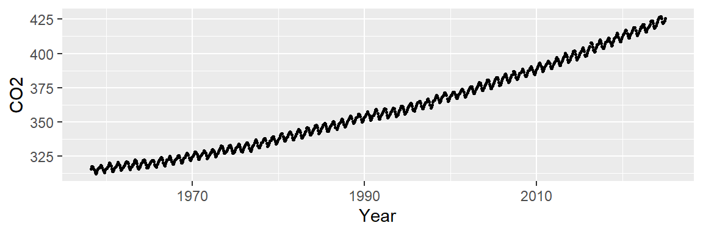
Let’s see if plotting the data using lines instead of points helps identify any underlying patterns.
ggplot(dat2, aes(x = Year , y = CO2)) + geom_line()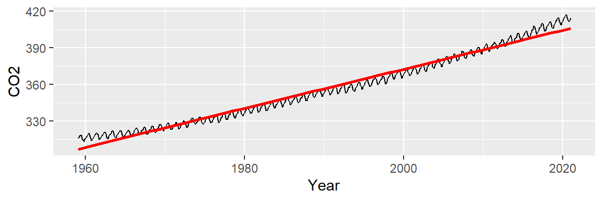
We note two patterns of interest: an overall upward trend, and a cyclical trend. We will first smooth out the overall trend by finding a model that best explains the overall variability, then we’ll remove that trend from the data to explore the cyclical component.
33.2 Exploring the overall trend
We can attempt to model the overall trend by fitting a straight line to the data using a 1st order polynomial. The fitted line is displayed in red in the following plot. We will use ggplot2’s built-in smoothing function to plot the regression line.
ggplot(dat2, aes(x = Year, y = CO2)) + geom_line() +
stat_smooth(method = "lm", se = FALSE, col = "red") 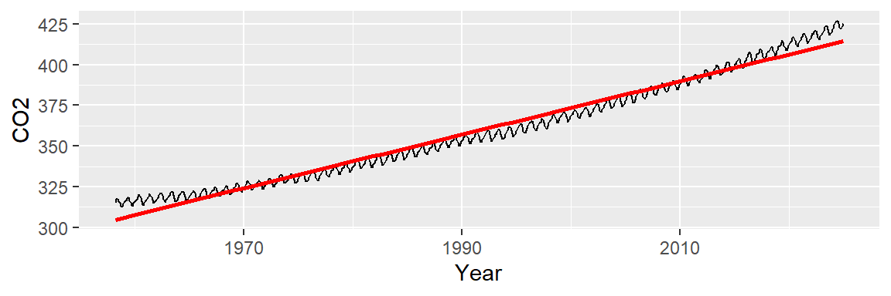
Next, we subtract the modeled line from the CO2 data and plot the result–this gives us the residuals and can be thought of as representing what the linear model does not explain about the data. But first, we will need to create a regression model object since it will provide us with the residuals needed to generate the residual plot.
# Generate a model object from the regression fit
M1 <- lm(CO2 ~ Year, dat2)
dat2$res1 <- M1$residuals
# Plot the residuals from the model object
ggplot(dat2, aes(x = Year, y = res1)) + geom_point()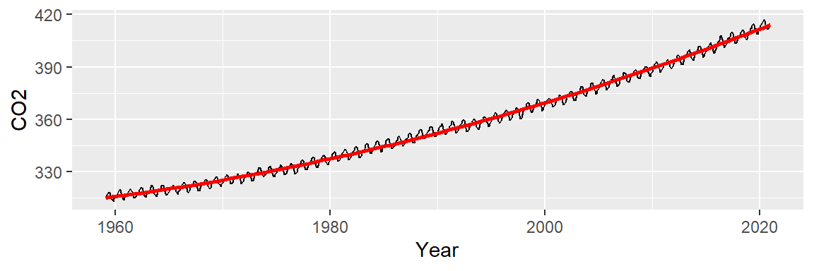
An convex trend is present in the residual. This suggests that we should augment the model to a 2nd order polynomial of the form:
\[ CO2_{trend} = a + b(Year) + c(Year^2) \]
The fitted line seems to do a better job in capturing the slight curvature in the data:
ggplot(dat2, aes(x = Year, y = CO2)) + geom_line() +
stat_smooth(method = "lm", formula = y ~ x + I(x^2),
se = FALSE, col = "red")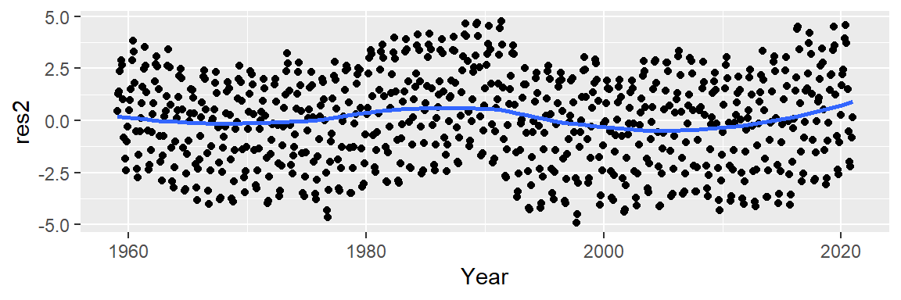
Next, we’ll explore the residuals. In helping discern any pattern in our residuals, we add a loess smooth to the plot.
M2 <- lm(CO2 ~ Year + I(Year^2), dat2)
dat2$res2 <- M2$residuals
ggplot(dat2 , aes(x = Year, y = res2)) + geom_point() +
stat_smooth(method = "loess", se = FALSE)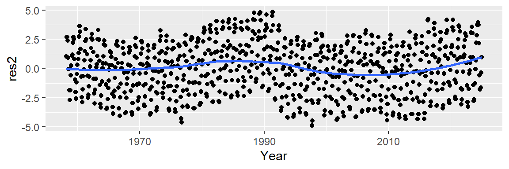
This is an improvement over the simple line model. So, what we have learned so far is that the overall trend is not perfectly linear but instead follows a curved pattern with a small “bump” around 1990. We can still make out a “W” shaped trend in the residuals which can hamper our analysis of the oscillatory patterns in the data in the subsequent section. We can try a 3rd order polynomial and see if it can capture the 1980 to 1995 bump.
ggplot(dat2, aes(x = Year, y = CO2)) + geom_line() +
stat_smooth(method = "lm", formula = y ~ x + I(x^2) + I(x^3),
se = FALSE, col = "red")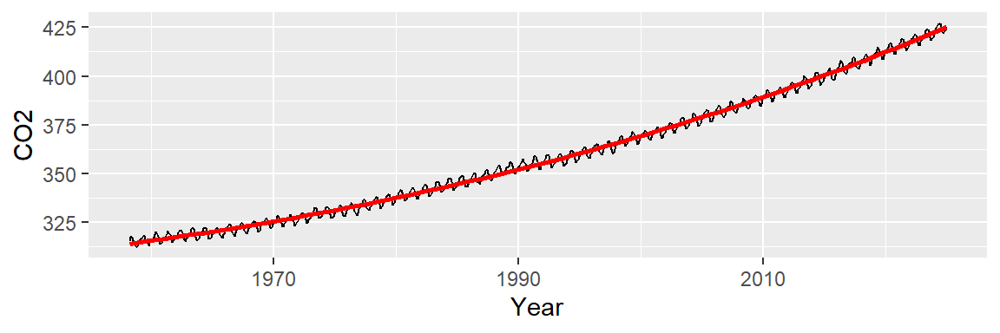
Now, let’s look at the residuals.
M2 <- lm(CO2 ~ Year + I(Year^2) + I(Year^3), dat2)
dat2$res2 <- M2$residuals
ggplot(dat2 , aes(x = Year, y = res2)) + geom_point() +
stat_smooth(method = "loess", se = FALSE)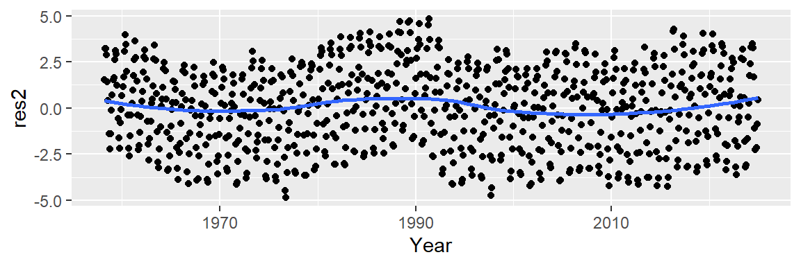
This does not appear to provide an improvement over the 2nd order polynomial fit. At this point, we could experiment with higher-order polynomials to better capture the trend, or we might consider shifting to a non-parametric approach.
When our goal is to peel away one pattern to reveal any underlying structure, it’s important not to restrict ourselves to parametric fits, which impose rigid mathematical models on the data. Instead, non-parametric smoothing techniques offer a flexible alternative, as they make minimal assumptions and do not impose a predefined structure on the data.
In the following figure, we illustrate this approach using a loess fit, a non-parametric method well-suited for uncovering subtle patterns in the data.
ggplot(dat2, aes(x = Year, y = CO2)) + geom_line() +
stat_smooth(method = "loess", span = 1/4, se = FALSE, col = "red")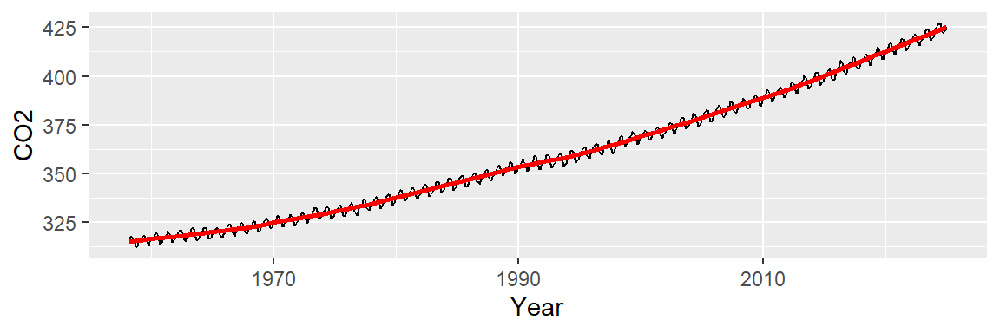
At first glance, this may not look any different from our 2nd or 3rd order polynomial models. But the resulting residuals suggest that the loess smooth did a better job in removing any decadal patterns in our batch of CO2 values.
lo <- loess(CO2 ~ Year, dat2, span=1/4)
dat2$res3 <- lo$residuals
ggplot(dat2, aes(x = Year, y = res3)) + geom_point() +
stat_smooth(method = "loess", se = FALSE)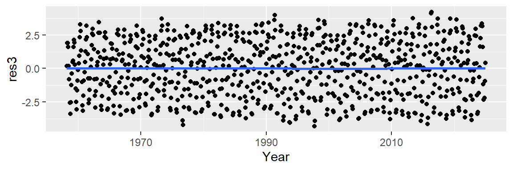
33.3 Exploring the seasonal component
Let’s now explore the cyclical pattern in the residuals. Note the residuals’ y-axis values: they are an order of magnitude less than the overall range of CO2 values. This indicates that the oscillating component of the data is relatively small (the CO2 values have a range of [312.42, 426.91] ppm whereas the residuals have a range of [-4.31, 4.22] ppm).
Now, we may be tempted to fit a smooth to the residuals but that may not prove fruitful. Instead, let’s see if the oscillation follows a 12 month cycle. We’ll group all the residual values by month of the year. In other words, we will remove the year tag associated with each value and explore those values as a function of month. Each month’s batch of values is distilled into a boxplot.
# Aggregate residuals by year
dat2$Month <- month(dat2$Date, label=TRUE)
ggplot(dat2, aes(x = Month, y = res3)) + geom_boxplot() 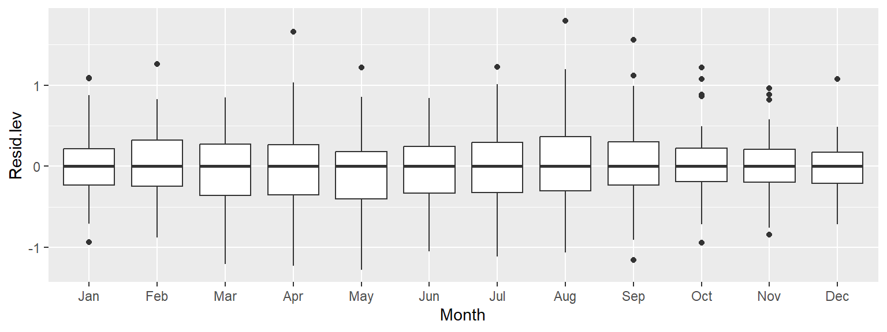
The plot reveals a clear oscillation that follows a yearly cycle, characterized by a peak in spring and a dip in fall. This pattern can be partially attributed to the uneven distribution of land mass between the northern and southern hemispheres.
In the northern hemisphere, plants—and the process of photosynthesis—become dormant during the winter months, reducing the natural uptake of atmospheric CO2. While photosynthesis in the southern hemisphere reaches its peak between October and March, the smaller land mass of the southern hemisphere limits its overall impact.
Additional factors, such as increased CO2 emissions during the winter months, may also contribute to the seasonal fluctuations in atmospheric CO2 concentrations.
Thus far, we have uncovered three patterns of interest: an overall trend, a “bump” around the 1980-1995 time period, and a cyclical component. Note that to effectively explore the cyclical pattern we had to de-trend (i.e. smooth) the data. Next, we should smooth the seasonal component of the data to see if another pattern emerges. We may, for example, smooth the data by subtracting the monthly median from each residual batch leaving us with the next batch of residual values to explore:
d3 <- dat2 %>%
group_by(month(Date)) %>%
mutate(Resid.lev = res3 - median(res3))
ggplot(d3, aes(x = Month, y = Resid.lev)) + geom_boxplot() 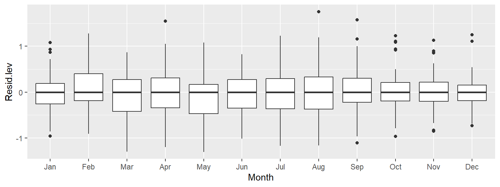
All the boxplots are lined up along their median values. We are now exploring the data after having accounted for both overall trend and seasonality. What can be gleaned from this dataset? We may want to explore the skewed nature of the residuals in March, or the narrower IQR of CO2 values for the fall months, for example.
We may also be interested in seeing if any trend in CO2 concentrations exists within each month. Let’s explore this by fitting a first order polynomial to the monthly data.
ggplot(d3, aes(x = Year, y = Resid.lev)) + geom_point(col = "grey", cex = .6) +
stat_smooth(se = FALSE, method = "lm") + facet_wrap(~ Month, nrow = 1) +
theme(axis.text.x=element_text(angle=45, hjust = 1.5, vjust = 1.6, size = 7))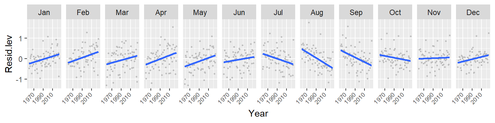
Note the overall increase in CO2 for the winter and spring months followed by a similar (but not as persistent) decrease in CO2 loss in the summer and fall months. This suggests either an increase in cyclical amplitude with the deviation from a central value being possibly greater for the winter/spring months. It could also suggest a gradual offset in the periodicity over the 60 year period. More specifically, a leftward shift in periodicity.
Let’s fit a loess to see if the trends within each month are monotonic. We’ll adopt a robust loess (family = "symmetric") to control for possible outliers in the data.
ggplot(d3, aes(x = Year, y = Resid.lev)) + geom_point(col = "grey", cex = .6) +
stat_smooth(method = "loess", se = FALSE,
method.args = list(family = "symmetric")) +
facet_wrap(~ Month, nrow = 1) +
theme(axis.text.x=element_text(angle=45, hjust = 1.5, vjust = 1.6, size = 7))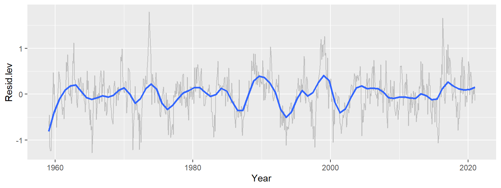
The trends are clearly not monotonic suggesting that the processes driving the cyclical concentrations of CO2 are not systematic. However, despite the curved nature of the fits, the overall trends observed with the straight lines still remain.
33.4 Exploring what remains
Now that we’ve fitted the monthly medians to the seasonal component of the data, let’s plot the residuals across the years. We’ll make use of the robust version of the loess given that the data may be quite noisy.
ggplot(d3, aes(x = Year, y = Resid.lev)) + geom_line(col = "grey") +
stat_smooth(method = "loess", se = FALSE, span = 0.1 ,
method.args = list(family = "symmetric", degree = 2)) 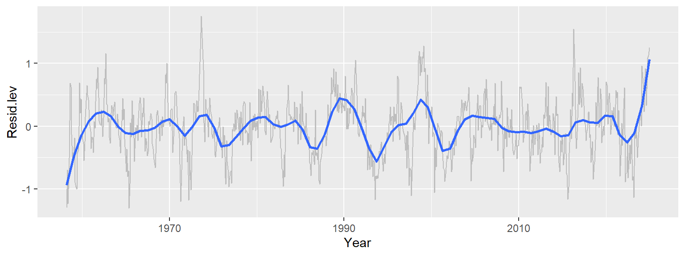
Recall that at this points, we have accounted for the overall trend which has, by far, the greatest effect with a range of over 110 ppm, and the seasonal component (which has a smaller effect with a range of about 7 ppm). The 3rd set of residuals account for about 2 ppm of the total variability in the dataset. Note that we can make out broad patterns of interest not consistent with random noise and not explained by seasonal variability. Some of the patterns could be explained by the southern oscillation index (SOI), for example, which is a measure of the difference in atmospheric pressure across the pacific basin. When the index is positive the resulting winds drive upwelling currents that release additional CO2 into the atmosphere.
It’s important to realize that this is one of many ways in which we could have proceeded with the analysis. For example, we could have started off the analysis by removing the seasonal component from the data, then analyzed the long term trend.